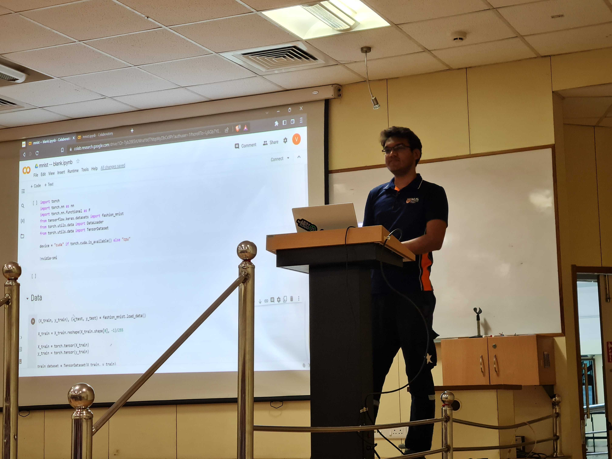

Hey👋! I am Varun, a Pre-Doctoral SCAI-Center Fellow at Microsoft Research India, where I am fortunate to work with Dr. Kalika Bali and Dr. Sunayana Sitaram. Prior to this, I was a Master's Student at AI4Bharat and IIT Madras, where I was co-advised by Dr. Raj Dabre and Prof. Mitesh Khapra. For what feels like eons ago now, I did my undergraduate studies at BITS Hyderabad, where I graduated with a B.E in Computer Science and a Minor in Physics.
Research Interests
I am broadly interested in Natural Language Processing (NLP), particularly in areas such as Multilinguality combined with Machine Translation, Model Efficiency, Reasoning, and the Evaluation of Large Language Models. My research encompasses several specific areas and research questions:
🗎 Document-Level Machine Translation How can we design or adapt existing Machine Translation models to translate entire documents reliably and efficiently? In a recent study, I explored a rudimentary approach of replacing the Positional Embeddings of a standard pretrained Transformer with ones that facilitate length-generalization. This method demonstrated significant improvements in long-context understanding and generation with minimal fine-tuning. A subsequent question I am exploring is: how can we develop suitable evaluation metrics for document-level translation that effectively capture the task's nuances and provide a more reliable measure of model performance? Emphasis is placed on addressing issues such as "translationese" and "coreference-resolution" that challenge current metrics. With the prevalence of Large Language Models (LLMs) and Instruction-Tuning, it is also intriguing to investigate how these challenges can be addressed through "steerable" generation techniques in LLMs.
⚙️ Model Efficiency My interest in model efficiency began with my Master's Thesis on Knowledge Distillation for Multilingual Machine Translation models, where I investigated the impact of architectural variants like Extreme Parameter Sharing, Language-Specific Parameter Augmentation, and the Width-vs-Height trade-off on model performance, achieving gains with minimal parameter overhead (framework). With the advent of LLMs, I am now interested in exploring techniques such as Adaptive Tokenization, KV-Cache Compression, Mixture-of-Experts, and Efficient Long-Range Attention mechanisms to make LLM training and inference faster and less computationally expensive.
⚖️ Evaluations The extensive use of internet data for training LLMs has led to "contamination" in standard benchmarks (EvalEval 2024). Therefore, it is essential to continuously develop evaluation benchmarks and metrics that enable a holistic assessment of these models. Standard metrics are inadequate for multi-dimensional assessments of creative and open-ended generations, making LLM-based evaluators a preferred choice. However, our previous work reveals a clear disparity in the performance of LLM-based evaluators across languages, tasks, and perturbations (EACL 2024, NAACL 2024, EMNLP 2024, ArXiv 2024). Thus, developing robust and "rational" multilingual evaluators is crucial. I believe that enhancing LLMs with strong reasoning abilities could significantly improve the reliability and interpretability of evaluations, and I am keen to explore how to build and "meta-evaluate" such models that can reason over outputs and offer a more robust assessment.
For a full list of my publications you can have a look here. Please feel free to reach out to me over email if you have any questions about my research.
News
-
2024-11-10: ✈️ Attending EMNLP 2024 at Miami, Florida to present our work, Pariksha. I am also applying for a PhD this cycle (for Fall 2025), so looking forward to connect with prospective mentors.
-
2024-10-21: 📜The Report on Contamination of Multilingual Benchmarks has been accepted at EvalEval @ NEURIPS 2024. The preprint is live!
-
2024-10-18: 📜 Preprint for Health-Pariksha in online. Do check it out, and more models are on the way! Also, version 2 of Towards Inducing Document-Level Abilities in MNMT Systems is online, with an improved name, write up, evaluation set and framework.
-
2024-08-10: ✈️ Attending ACL 2024 at Bangkok, Thailand (my first ever conference 🎉).
-
2023-07-31: ↪️ Converted from Intern to SCAI Center Fellow at Microsoft Research India.
-
2023-05-22: ▶️ Started my Internship at Microsoft Research India.
Teaching
Courses
- TA’d for "Machine Learning", "Linear Algebra and Random Processes", and "Fundamentals of Deep Learning" at IIT Madras. Won the ⭐ TA Award for both first and second year of M.Tech.
- TA’d for "Introductary Physics", "Computer Programming", "Discerete Mathematics", "Data Structures and Algorithms", "Foundatios of Data Science" and "Machine Learning" at BITS Hyderabad.
Theme by Ankit Sultana. Website verbatim shamelessly copied from Kabir Ahuja